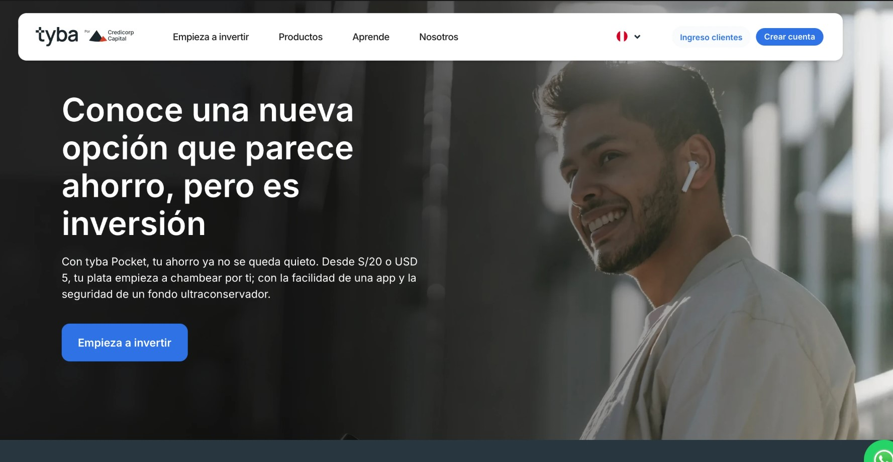
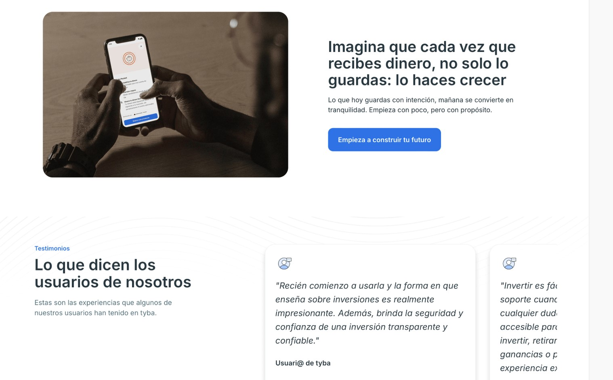
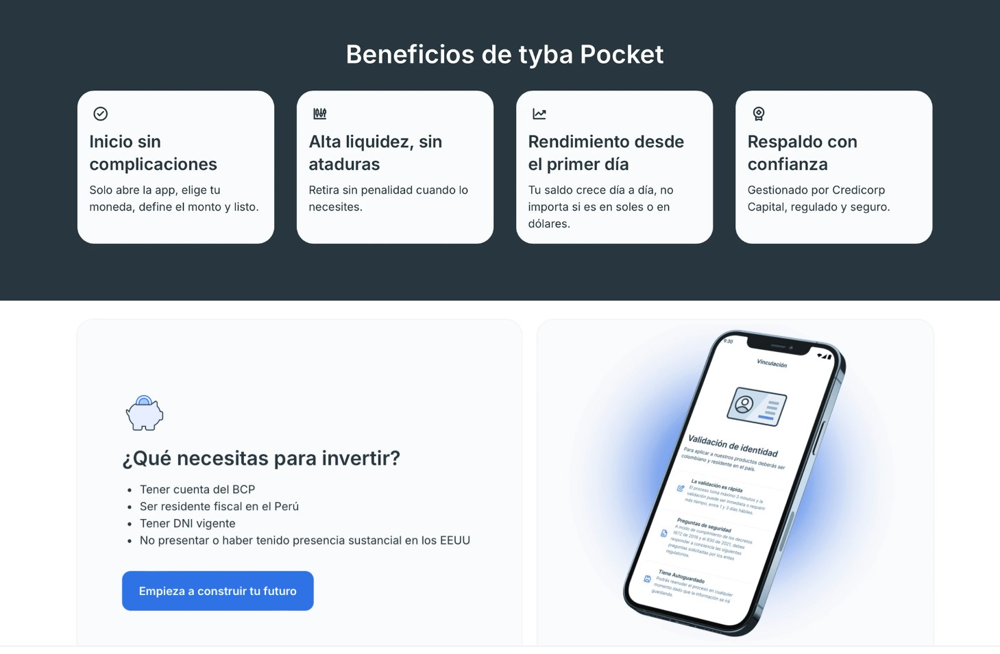

Product landing page for a fintech investment tool by Credicorp Capital & BCP — designed to turn first-time investors into confident ones.
tyba Pocket is a micro-investment product backed by Credicorp Capital and BCP — one of Peru's largest financial institutions. The challenge: communicate a complex financial product to a first-time investor audience without losing trust, compliance, or clarity.
The landing needed to explain what tyba Pocket is, why it's safe, and how to get started — all in language that feels human, not like a bank.
'The hero reframes the product concept immediately — this isn't just saving, it's investing. The headline positions tyba Pocket as a bridge between familiar behavior and a smarter outcome.

The mid-section deepens the emotional hook. This UX copy turns a passive financial behavior into an active, empowering one — key for first-time investors.

Financial products live or die by how clearly they explain themselves. The benefits section strips away jargon and replaces it with four direct, human statements. The onboarding block tells users exactly what they need — no surprises.

Every word on the page — headlines, CTAs, microcopy — written to guide, not overwhelm.
Narrative architecture from hero to CTA. Each section earns the next, building trust and reducing friction.
Visual direction and layout designed to communicate security and modernity — aligned with tyba's brand system.
Creative strategy, UX writing, and landing page design — end to end. Coordinated by Pegando La Vuelta Agency.
We help financial brands communicate with clarity and confidence.
Let's talk →